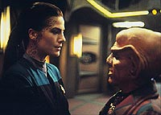
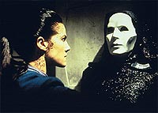
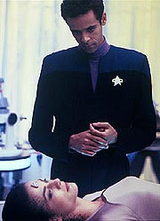
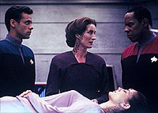
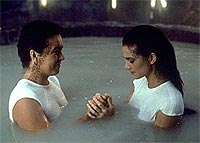

MANCHETE
DO EPISDIO
Segmento
se apia em Jadzia e segredo
Trill, mas no produz impacto na srie
Episdio
anterior | Prximo
episdio
Sinopse:
Data Estelar:
desconhecida.
Em um amigvel encontro da tripulao
de DS9 nos aposentos de Sisko para um jantar preparado pelo prprio
comandante, Jadzia toca uma melodia no teclado de Jake, que ela no
reconhece e nem sabe como conseguiu tocar. Algum tempo depois ela
continua "assombrada" por tal melodia e comea a exibir
estranhos padres de comportamento agressivos, no jogo de xadrez
com Ben e depois com Kira. Sendo em seguida vtima de uma alucinao,
envolvendo a tal msica e uma figura mascarada, Jadzia percebe
que h algo errado com ela e vai consultar Bashir.

O
bom doutor descobre que Jadzia est em um processo (reduo dos
nveis de isoboramina) que pode at levar rejeio do seu
simbionte Dax. Algo to srio que leva Sisko, Bashir e Dax a
bordo da Defiant para o mundo natal Trill, a fim de consultarem a
doutora Renhol, da Comisso de Simbiose. O tratamento da doutora
parece estar indo bem at que (a bordo da Defiant) Dax
experimenta uma nova alucinao, em que ela perseguida por
membros da Comisso de Simbiose, usando uniforme de quase cem
anos atrs.
Nosso trio segue para as cavernas de Mak'ala, tentando desvendar o
mistrio, onde encontram Timor, um Guardio (tipo de Trill no-unido
que devota a vida para cuidar dos simbiontes em tais cavernas,
onde ficam as piscinas naturais onde eles vivem). Timor diz que as
alucinaes so fruto de memrias de algum hospedeiro (no
necessariamente de Jadzia).
Finalmente o computador da Defiant identifica o compositor da tal
msica que vem atormentando Dax -- um Trill de nome Joran
Belar, que a comps h 86 anos atrs. Ao ver a foto do msico,
Jadzia tem uma nova viso, agora do assassinato de um doutor
Trill pela mesma figura mascarada que se revela como o prprio
Joran. Jadzia entra em choque neural.
A doutora Renhol est alarmada com os baixo nveis de
isoboramina de Dax e avisa que se a situao no melhorar em 48
horas ela ir retirar o simbionte (matando Jadzia no processo).
Bashir e Sisko continuam sua busca por informaes relativas a
Belar e cada vez fica mais claro que algum andou apagando
deliberadamente informaes sobre o Trill (ainda que eles
consigam descobrir que Joran morreu no mesmo dia em que Torias Dax
morreu e que o simbionte Dax foi colocado em Curzon).
Finalmente eles encontram o registro de um irmo, um bastante
idoso Yolad Belar, e conseguem contat-lo. Yolad revela que seu
irmo (que tambm fazia parte do programa de candidatos a
simbiose) matou um doutor da Comisso de Simbiose e morreu
tentando escapar (85 anos atrs). Disse tambm que seu irmo
lhe disse ter conseguido a unio com um simbionte, o que ele no
acreditou muito na poca, seis meses antes de morrer.

Confrontando
Renhol com tal informao, Sisko e Bashir a foram a admitir a
verdade. Anos atrs, eles (da Comisso de Simbiose) erroneamente
implantaram o simbionte Dax num hospedeiro inadequado com tendncias
violentas. Tudo que se sabe sobre os Trills diz que, se tal coisa
acontece, tanto o hospedeiro quanto o simbionte deveriam morrer
muito rapidamente (especialmente um hospedeiro instvel como
Joran).
Entretanto, Joran viveu seis meses como Joran Dax. O que quer
dizer que uma proporo muito maior de candidatos potenciais
para simbiose existe dentre a populao Trill (no um para mil,
mas 500 para mil). Tal segredo precisava ser preservado, pois ele
poderia transformar os simbiontes em commodities no mercado
comercial. Ento as memrias de Joran foram bloqueadas no
simbionte e Dax foi unido a Curzon. Agora o bloqueio estava se
deteriorando e Jadzia estava experimentando todo esse problema por
causa disso.
Sisko ameaa revelar toda a verdade populao Trill se
Jadzia for sacrificada. A doutora recua e diz que a nica maneira
de tratar a situao deixar que as memrias de Joran sejam
desbloqueadas e se integrem naturalmente s demais memrias do
simbionte (o que arriscado, pois a personalidade de Joran pode
tomar o controle). Jadzia decide arriscar e entra em uma das
piscinas dos simbiontes e faz contato com um deles. O procedimento
desfaz o bloqueio e permite que as memrias de Joran sejam
reintegradas. De volta a DS9, Jadzia tem muito que ponderar sobre
o que aconteceu e como lidar com essas novas memrias e volta a
aquela melodia do incio, no teclado.
Comentrios:
Um aparentemente previsvel episdio de "personagem
beira da morte por razes desconhecidas" (TM) acaba por
trazer tona um trgico segredo guardado a sete chaves pela
sociedade Trill, que desvenda um lado sombrio at ento
desconhecido de Jadzia Dax (bem mais sombrio que o seu lado
Klingon, devo dizer). O episdio funciona em seus termos porque a
resoluo da histria reside nica e exclusivamente na
personagem. Saibam mais detalhes, sem ter a necessidade de entrar
na piscina dos simbiontes no processo, nas linhas abaixo.

A
Comisso tinha um bom plano: bloquear as memrias de Dax (mas no
mat-lo, independentemente das conseqncias) e apagar os
registros (mas no matar Yolad). O plano caiu junto com o
bloqueio das memrias de Dax (com a pista inicial da msica) e
da posterior boa investigao de Sisko (que insistiu no registro
das Academias de msica). As alucinaes foram interessantes e
funcionam bem para audincia, tambm em uma segunda assistida.
O que no funciona muito bem descobrirmos que metade da populao
capaz de se unir e que foi justo o incidente com Joran que
trouxe isto tona, o que parece excessivo e no faz muito
sentido, a no ser que os cientistas Trills sejam muito idiotas
(o que no parece ser o caso). A investigao tambm tomou
muito tempo do episdio, que poderia ter sido usado melhor para
tratar das reaes de Dax a tudo isso (acabamos ficando com uma
infeliz cena em off).
Ren Echevarria (o mestre da caracterizao) fez um bom dever
de casa para escrever o seu primeiro roteiro para DS9. Os
personagens se beneficiam em diversos momentos, tais como o
tradicional jogo de xadrez entre Dax e Sisko, Dax dizendo para
Kira tirar as mos dela ( beira de um confronto que poderia com
certeza levar destruio do Replimat --uma referncia
indireta a "Blood
Oath"?), uma outrora impensvel "cena sria
com Dax acabando por passar a noite nos aposentos de Bashir, com
ele" (lembram de Bashir como um "cachorro no cio"
atrs da Trill no comeo da srie?), uma cena entre Bashir e
Sisko falando sobre Dax (lembrados de um "absurdo e improvvel
tringulo amoroso" entre os trs em "A
Man Alone"?) e outros elementos citados corretamente
e desenvolvidos da histria de Dax.
Apesar da imagem final de Dax na piscina ser simbolicamente
atraente, a ltima cena teria que indicar que Dax iria continuar
com a sua vida e lidar com a descoberta da existncia de Joran
Dax, o que feito com ela tocando a mesma melodia do incio,
agora em seus aposentos.
Talvez a maior crtica ao segmento no deva ser dirigida a ele,
mas prpria srie. Tal revelao poderia servir de combustvel
para inmeras histrias frente, se fosse tratada de verdade
pela produo da srie, trazendo uma reviravolta para a
personagem. Reviravolta similar a aquela pela qual passou Bashir,
aps o episdio "Dr. Bashir, I Presume" (da
quinta temporada). Mas este definitivamente no foi o caso.
Outro ponto que da mesma forma que o (ver "The
Wire") "Garak sem implante" no parece ser
to diferente assim do "Garak com implante", a
"Jadzia com as memrias de Joran" no parece ser to
diferente assim da "Jadzia sem as memrias de Joran".
Mais uma para a conta da srie como um todo.
A caracterizao de Timor brilhante e abre toda sorte de
especulao sobre a relao entre os guardies e os
simbiontes ( interessante que seja lanada uma espcie de aura
mstica sobre tal relao, que d um carter "maior que
a vida" aos simbiontes, condio que tem o seu
"payoff" no final do episdio). Telepatia obviamente
faz parte da equao aqui.

Renhol
no foi de forma nenhuma tpica "vil da semana" e
Yolad trouxe a necessria e bem-vinda faceta mais humana de
Joran. Tudo parece indicar que Joran s enlouqueceu devido ao
erro da comisso em uni-lo ao simbionte Dax em primeiro lugar e
pode se especular que ele matou o tal doutor aps ele descobrir
que eles iriam remover o simbionte, matando-o no processo (o que
eles acabaram fazendo de qualquer jeito). Joran emerge de uma
forma bem comportada ao final do episdio (o predador que
espreita?), o que no aconteceria nas suas duas posteriores
"participaes" na srie.
A direo de Cliff Bole foi bastante segura e suave a maior
parte do tempo. Algumas bobeadas do diretor: o final do
"teaser", que foi perdendo fora at simplesmente se
apagar, a ligao entre as cenas sucessivas de Dax & Sisko e
Dax & Kira, que pareceu simples demais, e um corte mal feito
na cena em que Dax volta s cavernas para contatar os outros
simbiontes e libertar as memrias de Joran. Seus pontos altos
foram todas as transies (de atmosfera e mesmo de
"realidades") desde o "teaser", em que o
ambiente festivo fica subitamente carregado com a angstia de
Dax, passando pelo "vai e volta" das alucinaes at
a bela imagem de Jadzia "reencontrando" Belar no final.
A msica (de Jay Chattaway) foi efetiva durante todo o episdio
e a produo fez um bom trabalho com o sbrio oramento para
as cenas das alucinaes. Entretanto, a clara economia para
produzir o episdio prejudicou flagrantemente a primeira visita
ao planeta Trill, resumindo a sua superfcie a uma pintura de um
nico prdio, e as cavernas Mak'ala a algo completamente simplrio
(s faltando um imenso cartaz ao fundo escrito: "Este o
'Planet Hell' arrumado para parecer a caverna dos simbiontes
--favor no reparar muito!"). As tomadas da Defiant foram
ok, mas isso no quer dizer muito.
Brooks foi extremamente jovial e carismtico no comeo e contido
e forte no restante do episdio. Sentado na cadeira de comando da
Defiant, conversando com Bashir, se observa uma presena
excelente. El Fadil fez o que pde, mas o material dado no foi
nada de especial. Farrell teve que segurar a (normalmente) difcil
barra para um ator de sofrer grandes mudanas de temperamento,
ter alucinaes e mesmo o inevitvel colapso nervoso. A atriz
se portou de forma adequada, particularmente ao final da primeira
alucinao a bordo da Defiant, em que ela olha em volta tentando
recuperar o seu senso de orientao (fazer o cmera circular em
volta da atriz casou perfeitamente na cena tambm). Os demais
regulares honraram o pagamento da semana (e Meaney nem apareceu).

Jeff
Magnus McBride enquanto ator foi um timo mgico. As cenas em
que ele parece como Joran "ao natural" mostraram pouca
expresso, mas o seu "nmero mascarado" foi muito
interessante, dando um ar diferenciado ao episdio (o devaneio
original de Piller frutificou neste sentido). Banes mostrou que a
sua personagem realmente acreditava no que estava fazendo e fugiu
bravamente do perfil de "antagonista clich" (e a sua
diferente pronncia para "Jadzia" foi muito bem vinda
sem dvida). Cascone e Vermon foram perfeitos em seus papis.
O "teaser" do episdio ganha fcil na categoria do
mais "fofinho" de todos os tempos. A qumica existente
entre todos flagrante e Brooks se mostra infinitamente
vontade como anfitrio. Auberjonois batendo o sufl
absurdamente hilrio (mais do que tem qualquer direito de ser) e
a "coisa das beterrabas" uma das marcas registradas
da srie. Faltaram Quark e O'Brien no "teaser", o
bartender Ferengi ganhou uma (micro) cena residual mais frente
e o chefe no apareceu mesmo no episdio.
Algumas pitadas finais:
Aprendemos sobre a habilidade culinria de Sisko --vem do bero.
Seu pai um respeitado "chef" em Nova Orleans, dono de
um restaurante chamado (obviamente) de "Sisko's".
Na primeira alucinao de Dax a bordo da Defiant, ficamos sem
saber quem o segundo tripulante que ela agride. Teria sido ele
Sisko?
A doutora Renhol certamente no estava s especulando sobre os
simbiontes se tornarem prmios a serem comprados, roubados,
comercializados etc. se o segredo viesse tona. Basta que nos
lembremos de Verad de "Invasive
Procedures", da temporada passada.
O fato de ser necessrio um outro simbionte para liberar as memrias
de Dax parece indicar que um segundo simbionte foi necessrio
para fazer o bloqueio. Como os simbiontes se reproduzem? Como se
desenvolvem? Eles formam algum tipo de comunidade? Um simbionte
"virgem" um simples receptculo de memrias ou j
traz alguma coisa para a primeira unio? Se trouxer, traz o qu?
(Entre tantas outras perguntas que no foram respondidas durante
a srie.)
"Equilibrium" mais uma das "pequenas histrias
de personagens de DS9" (TM). Especificamente uma
daquelas que sugere novos caminhos a serem trilhados, muito mais
um "setup" para possveis futuras histrias do que uma
histria em si. Um rico filo envolvendo a interessante dinmica
entre guardies, simbiontes e os demais Trills, bem como Jadzia
tendo que lidar com fato de ter agora as memrias de um
psicopata. Ainda que se lamente que tal filo nunca tenha sido
aproveitado completamente ao longo da srie at o seu final,
fica a felicidade de que ele ao menos tenha sido apresentado aqui,
um bom esforo dos envolvidos.
Citaes
Sisko - "Beets are a
very misunderstood vegetable."
("Beterrabas so vegetais muito injustiados.")
Jadzia - "I don't need therapy, Julian; I need
answers."
("Eu no preciso de terapia, Julian; eu preciso de
respostas.")
Bashir - "Can I ask what you're doing?"
("Posso perguntar o que est fazendo?")
Timor - "Yes."
("Sim.")
Jadzia - "If you want to know who you are, it's important
to know who you've been."
("Se voc quer saber quem voc , importante saber quem
voc foi.")
Trivia:
 O roteiro do episdio (primeiro de Ren Echevarria para DS9)
teve como ponto de partida um show de mgica assistido pelo ento
produtor-executivo Michael Piller. O show tinha a participao
do mgico Jeff Magnus McBride, que acabaria aparecendo no episdio
tanto como o prprio Joran Belar, como a sua "verso
mascarada das alucinaes de Jadzia Dax". O personagem
Joran belar seria mais tarde interpretado por Avery Brooks em "Facets"
(tambm da terceira temporada) e por Leigh J. McCloskey em "Field
of Fire" (da stima temporada).
O roteiro do episdio (primeiro de Ren Echevarria para DS9)
teve como ponto de partida um show de mgica assistido pelo ento
produtor-executivo Michael Piller. O show tinha a participao
do mgico Jeff Magnus McBride, que acabaria aparecendo no episdio
tanto como o prprio Joran Belar, como a sua "verso
mascarada das alucinaes de Jadzia Dax". O personagem
Joran belar seria mais tarde interpretado por Avery Brooks em "Facets"
(tambm da terceira temporada) e por Leigh J. McCloskey em "Field
of Fire" (da stima temporada).
Entretanto, transformar o lampejo de Piller e mesmo uma histria
comprada de Christopher Teague, um amigo em comum de Piller e
McBride, em uma premissa funcional no foi nada fcil. Ira Behr
disse na poca que eles tinham simplesmente o ator (o citado mgico),
as suas mscaras e nada mais. Ron Moore lembra que a histria
original de Teague tinha a ver com um "circo que vinha a
bordo de DS9" com um mgico vivido por McBride como parte da
trupe. O roteirista disse que definitivamente este NO era o
caminho a ser seguido!
Foi o prprio Moore que "sacou" que a tal "figura
mascarada" seria uma boa metfora para um Trill e da o
episdio se tornou um veculo para Dax. Echevarria lembra que o
episdio passou de um episdio do tipo "o que est
acontecendo com Dax?" Para um envolvendo um grande e sombrio
mistrio. O roteirista tambm lembra que o que o seu roteiro
pedia inicialmente era uma pequena cidade onde Dax avistava alguma
coisa no topo de uma montanha e subia, indo investigar e ficando
intrigada por uma sucesso de imagens e lugares sem saber por qu.
Como sempre tais "desejos de roteirista" tiveram que ser
tratados de uma maneira muito mais simples (e econmica), com os
cenrios de DS9, da Defiant e do famoso "Planet
Hell" (o palco 18 do estdio, utilizado para paisagens aliengenas
como cavernas, por exemplo). Os efeitos visuais tambm foram
mantidos ao mnimo.
Como a msica era muito importante para o episdio, Jay
Chattaway foi procurado com antecedncia para compor um tema que
Dax pudesse cantarolar no curso do episdio. Um outro desafio
para a produo foi em uma transio em que Jadzia deixa o
Promenade e mergulha em uma de suas alucinaes --tal transio
tinha que ser suave e ainda indicar claramente que tal mudana de
cenrio acabara de acontecer.
Nicholas Cascone tambm apareceu como Davies no episdio "Pen
Pals" (da segunda temporada de A Nova Gerao).
Ficha
tcnica:
Histria de Christopher Teague
Roteiro de Ren Echevarria
Direo de Cliff Bole
Exibido em 17/10/1994
Produo: 050
Elenco:
Avery Brooks como
Benjamin Lafayette Sisko
Ren Auberjonois como Odo
Nana Visitor como Kira Nerys
Colm Meaney como Miles Edward O'Brien
Siddig El Fadil como Julian Subatoi Bashir
Armin Shimerman como Quark
Terry Farrell como Jadzia Dax
Cirroc Lofton como Jake Sisko
Elenco convidado:
Lisa Banes como
dr. Renhol
Jeff Magnus McBride como Joran Belar
Nicholas Cascone como Timor
Harvey Vernon como Yolad Belar